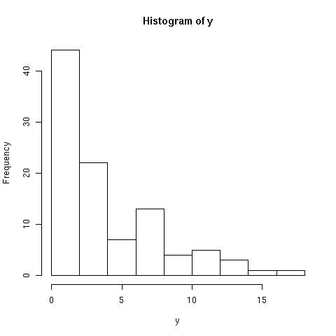

# compress/ uncompress
zip: zip -r <folder.zip> <folder>, unzip <folder.zip><br>
tar: tar -cvf <folder.tar> <folder>, tar -xvf <folder.tar>
tar.gz: tar -zcvf <folder.tar.gz> <folder>, tar -zxvf <folder.tar.gz>
tar.bz2: tar -jcvf <folder.tar.bz2> <folder>, tar -jxvf <folder.tar.bz2>
gz: gzip <file>, gunzip <file.gz>
# make alias
alias <name>=<linux command>
# windows is on /dev/sda3 (Show windows partition on boot)
/dev/sda3 /media/windows ntfs-3g defaults,locale=en_US.UTF-8 0 0
# Macbuntu dock's file browser problem
sudo vi /usr/share/applications/nautilus-browser.desktop
Put "." in place of "%U" in "Exec=nautilus --no-desktop --browser %U"
# Sound card detection
Add options snd-hda-intel model=dell-s14 or ref
in file /etc/modprobe.d/alsa-base.conf
# Run scp in background
nohup scp sachin@xyz.com:/a/b.tar.gz . > /dev/null 2>&1
# Ubuntu Side bar utility
screenlet (like InfoPanel)
# Denmark Weather Zip code
DAXX0009
# Change file and dir permissions
find . -type f -exec chmod 640 \{} \;
and
find . -type d -exec chmod 750 \{} \;
# Move file within same directory to sub-directory
find . -maxdepth 1 -type f -exec mv \{} <sub-dir> \; (-maxdepth: non-recursive search)
# rename multiple files or diretories
rename DBA_delta morin_eb DBA_delta*
# create soft link
ln -s {target-filename} {symbolic-filename}
example: ln -s original_file link_name
# icon path
/usr/share/apt-install/icons
/home/sachin/.icons/Macubuntu-Icons/apps/scalable
# create empty file
><file name>, or;
touch <file name>
# replace text in a file
sed -i 's/string1/string2/g' <file name>
# replace text in all files within a directory
find myScripts/ -type f -exec grep '\=\/home\/projects' {} \;
find myScripts/ -type f -exec sed -i 's/\=\/home/\=\/rth\/sachin/g' {} \;
find myScripts/ -type f -exec grep '\=\"\/home\/projects' {} \;
find myScripts/ -type f -exec sed -i 's/\=\"\/home/\=\"\/rth\/sachin/g' {} \;
# build and execute command lines from standard input
xargs (e.g. find . -type f | xargs perl -ne 'print $_;')
# execute a script at specified time
crontab -e (00 0 * * 6 sachin /rth/sachin/software/myScripts/kuSync.sh)
# execute firefox remotely
firefox -no-remote &
# show all child processes
ps x -o "%p %r %y %x %c"
# pdf to eps
pdftops -eps <input>.pdf - | ps2eps > <output>.eps
# shell from command line
for i in *.sh.hits; do echo $i; done
# extract each fasta formatted sequence
awk -F \> ' /^>/ { file=$2 ".fa"} { print $0 > file }' inputfile
# qsub with arguments
echo "./script.sh var1=13 var2=24" | qsub
# convert HEX to DECIMAL format (useful for bitwise flag in SAM format)
perl -ae 'print 16 & 0x10."\n"';
# check installed packages in R
installed.packages()[,c("Package","Version")]
# replace openJDK/icedTea with sun-java6
http://sites.google.com/site/easylinuxtipsproject/java
# extract a fasta record
awk -vRS=">" '/NP_10001/' file
# kill all skype process
killall skype -s 9
# install latex packages
sudo apt-get install texlive-science
# export perl module path
edit ~/.bashrc with export PERL5LIB=<MODULE PATH>
# view pdf files integrated to the firefox browser
sudo apt-get install mozplugger
vi /home/YOUR_USERNAME/.mozilla/mozpluggerrc
replace ": evince $file" with "repeat noisy swallow(evince) fill: evince "$file"
restart firefox
# install perl modules locally (/usr/local/lib)
perl -MCPAN -e shell
install local::lib
# install package ctc in R
source("http://bioconductor.org/biocLite.R")
biocLite("ctc")
# R code to increase the size of canvas
par(mar=c(5,4,4,2))
# R code to put the xlab and ylab
title(ylab = "density", xlab="cluster score", cex.lab = 1.4, line=4.5)
# R code to change the orientation of the axis values
las=2 (0=parallel, 1=all horizontal, 2=all perpendicular to axis, 3=all vertical)
# Install Rmpi
mpi-selector --query
mpi-selector-menu
export INCLUDE=/usr/mpi/gcc/openmpi-1.4.2/include
R CMD INSTALL Rmpi_0.5-9.tar.gz --configure-args=--with-mpi=/usr/mpi/gcc/openmpi-1.4.2
# R missing package
install.packages("Rmpi",configure.args="--with-mpi=/usr/lib64/openmpi/1.4-gcc")
# R remove special characters in a string
text = "Hello *"
qsub('[*]', '', text)
# R clear screen
CTRL+SHIFT+L
# R plotting differentially methylated bases on an ideogram
link
# R save plot in svg
library(RSVGDevice)
devSVG(file='SVG Output.svg', height=6, width=6, onefile=TRUE)
# R script on qsub (some packages in R scripts are not able to load when submitted to qsub)
solution: give path of all dependent packages (detail)
library(amap, lib.loc = "")
library(ctc, lib.loc = "")
library(Rmpi, lib.loc = "")
# html cheat sheet
|
# negative binomial distribution (model fitting and validation in R)
1. initiate a demo negative binomial dataset
> df <- data.frame(y=rnbinom(100,size=1,mu=5))
2. distribution of y
> hist(y)

3a. determine parameters (size, prob and mu) using glm.nb
> m0 <- glm.nb(y~1,data=df)
> exp(coef(m0)) or exp(m0$coefficients)
(Intercept)
5.8
> mu <- 5.8
> m0$theta
1.072289
> size <- 1.07
> prob <- size/(size+mu)
3b. determine parameters (size and mu) using fitdistr
> params = fitdistr(y, "Negative Binomial")
> params
size mu
1.4727173 4.2999591
(0.3011351) (0.4105418)
4. given the parameters of fitted negative binomial distibution, estimate probability of observing x=10 and x=100
> x <- 10
> pnbinom(x, size=size, mu=mu, lower.tail=FALSE)
[1] 0.1718073
> x <- 100
> pnbinom(x, size=size, mu=mu, lower.tail=FALSE)
[1] 4.609205e-08
5. check how well data fits to the model
> qqplot(pnbinom(sort(y), size=size, mu=mu), ppoints(y))
> abline(0,1)
6. simulate values based on fitted model
> qnbinom(ppoints(y), size=size, mu=mu, lower.tail=FALSE)
[1] 32 25 22 20 19 17 16 16 15 14 13 13 12 12 12 11 11 10 10 10 9 9 9 9 8
[26] 8 8 8 7 7 7 7 7 6 6 6 6 6 6 5 5 5 5 5 5 5 4 4 4 4
[51] 4 4 4 4 3 3 3 3 3 3 3 3 3 2 2 2 2 2 2 2 2 2 2 2 1
[76] 1 1 1 1 1 1 1 1 1 1 1 0 0 0 0 0 0 0 0 0 0 0 0 0 0
7a. rule of thumb:
When the variance is greater than the mean, overdispersion is evident and thus the negative binomial distribution is likely appropriate.
If the variance and mean are the same, the Poisson distribution is suggested, and; when the variance is less than the mean, it's the binomial distribution that's recommended.
7b. relation between binomial and negative binomial distribution:
A binomial experiment and a negative binomial experiment have exactly the same properties, except for one thing.
With a binomial experiment, we are concerned with finding the probability of r successes in x trials, where x is fixed.
With a negative binomial experiment, we are concerned with finding the probability that the rth success occurs on the xth trial, where r is fixed.
7c. relation between geometric and negative binomial distribution:
The geometric distribution is a special case of the negative binomial distribution. It deals with the number of trials required for a single success.
Thus, the geometric distribution is negative binomial distribution where the number of successes (r) is equal to 1.
With a negative binomial distribution, we are concerned with finding the probability that the rth success occurs on the xth trial, where r is fixed.
With a geometric distribution, we are concerned with finding the probability that the first success occurs on the xth trial.
7d. More information is here, here and here
# hypergeometric distribution
In probability theory and statistics, the hypergeometric distribution is a discrete probability distribution that describes the probability of k successes in n draws
from a finite population of size N without replacement. (cf. the binomial distribution, which describes the probability of k successes in n draws with replacement.)
1. Suppose we have 33095 loci with expression in all 11 samples and of this 5821 loci are in 3' UTR.
Next, We observe 5300 loci with differential processing and of this 1197 are in 3' UTR. Now the
question we ask is, Is differential processing significantly overrepresented in 3' UTR region as
expected by chance?
2. Population size, N = 33095; 3' UTR in population, K = 5821
3. Sample size, n = 5300; 3' UTR in sample, k = 1197
4. Now the parameters in hypergeometric test are
phyper(q, m, n, k, lower.tail = TRUE, log.p = FALSE)
x, q vector of quantiles representing the number of white balls drawn without replacement from an urn which contains both black and white balls.
m the number of white balls in the urn.
n the number of black balls in the urn.
k the number of balls drawn from the urn.
5. computing the parameters using values from 2 and 3, we get
x = 1197 (k)
m = 5821 (K)
n = 33095-5821 (N-K)
k = 5300 (n)
6. > phyper(1197, 5821, 33095-5821, 5300, lower.tail=FALSE)
[1] 1.342064e-24
7. Thus, differential processing is overrepresented in 3'UTR at a p-value of 2.02e-25. Since, we are
interested in P(X>=x), we have put lower.tail=FALSE.
# fisher's exact test
Fisher's extact test is used for testing the null of independence of rows and columns in a contingency table
with fixed marginals.
1. Suppose we have 33095 loci with expression in all 11 samples and of this 5821 loci are in 3' UTR.
Next, We observe 5300 loci with differential processing and of this 1197 are in 3' UTR. Now the
question we ask is, Is differential processing significantly overrepresented in 3' UTR region as
expected by chance?
2. Population size, N = 33095; 3' UTR in population, K = 5821
3. Sample size, n = 5300; 3' UTR in sample, k = 1197
4. Now the contingency table is
loci <- matrix(c(5821,1197,33095-5821,5300-1197), nrow = 2)
5. > fisher.test(loci)
Fisher's Exact Test for Count Data
data: test
p-value < 2.2e-16
alternative hypothesis: true odds ratio is not equal to 1
95 percent confidence interval:
0.6816095 0.7855670
sample estimates:
odds ratio
0.7315771
# permutation and combination
1. permutation: if the order matter.
2. combination: if the order does not matter.
3. permutation with repetition = n^r
4. permutation without repetition = n!/(n-r)!
5. combination with repetition = (n+r-1)!/r!(n-1)!
6. combination without repetition = n!/r!(n-r)!
7. more information is here
# useful links
1. http://vassarstats.net/
# How to choose statistical test (more)
|
Type of Data |
| Goal |
Measurement (from Gaussian Population) |
Rank, Score, or Measurement (from Non- Gaussian Population) |
Binomial
(Two Possible Outcomes) |
Survival Time |
| Describe one group |
Mean, SD |
Median, interquartile range |
Proportion |
Kaplan Meier survival curve |
| Compare one group to a hypothetical value |
One-sample t test |
Wilcoxon test |
Chi-square
or
Binomial test ** |
|
| Compare two unpaired groups |
Unpaired t test |
Mann-Whitney test |
Fisher's test
(chi-square for large samples) |
Log-rank test or Mantel-Haenszel* |
| Compare two paired groups |
Paired t test |
Wilcoxon test |
McNemar's test |
Conditional proportional hazards regression* |
| Compare three or more unmatched groups |
One-way ANOVA |
Kruskal-Wallis test |
Chi-square test |
Cox proportional hazard regression** |
| Compare three or more matched groups |
Repeated-measures ANOVA |
Friedman test |
Cochrane Q** |
Conditional proportional hazards regression** |
| Quantify association between two variables |
Pearson correlation |
Spearman correlation |
Contingency coefficients** |
|
| Predict value from another measured variable |
Simple linear regression
or
Nonlinear regression |
Nonparametric regression** |
Simple logistic regression* |
Cox proportional hazard regression* |
| Predict value from several measured or binomial variables |
Multiple linear regression*
or
Multiple nonlinear regression** |
|
Multiple logistic regression* |
Cox proportional hazard regression* |
|
REVIEW OF NONPARAMETRIC TESTS
Choosing the right test to compare measurements is a bit tricky, as you must choose between two families of tests: parametric and nonparametric. Many -statistical test are based upon the assumption that the data are sampled from a Gaussian distribution. These tests are referred to as parametric tests. Commonly used parametric tests are listed in the first column of the table and include the t test and analysis of variance.
Tests that do not make assumptions about the population distribution are referred to as nonparametric- tests. You've already learned a bit about nonparametric tests in previous chapters. All commonly used nonparametric tests rank the outcome variable from low to high and then analyze the ranks. These tests are listed in the second column of the table and include the Wilcoxon, Mann-Whitney test, and Kruskal-Wallis tests. These tests are also called distribution-free tests.
CHOOSING BETWEEN PARAMETRIC AND NONPARAMETRIC TESTS: THE EASY CASES
Choosing between parametric and nonparametric tests is sometimes easy. You should definitely choose a parametric test if you are sure that your data are sampled from a population that follows a Gaussian distribution (at least approximately). You should definitely select a nonparametric test in three situations:
• The outcome is a rank or a score and the population is clearly not Gaussian. Examples include class ranking of students, the Apgar score for the health of newborn babies (measured on a scale of 0 to IO and where all scores are integers), the visual analogue score for pain (measured on a continuous scale where 0 is no pain and 10 is unbearable pain), and the star scale commonly used by movie and restaurant critics (* is OK, ***** is fantastic).
• Some values are "off the scale," that is, too high or too low to measure. Even if the population is Gaussian, it is impossible to analyze such data with a parametric test since you don't know all of the values. Using a nonparametric test with these data is simple. Assign values too low to measure an arbitrary very low value and assign values too high to measure an arbitrary very high value. Then perform a nonparametric test. Since the nonparametric test only knows about the relative ranks of the values, it won't matter that you didn't know all the values exactly.
• The data ire measurements, and you are sure that the population is not distributed in a Gaussian manner. If the data are not sampled from a Gaussian distribution, consider whether you can transformed the values to make the distribution become Gaussian. For example, you might take the logarithm or reciprocal of all values. There are often biological or chemical reasons (as well as statistical ones) for performing a particular transform.
CHOOSING BETWEEN PARAMETRIC AND NONPARAMETRIC TESTS: THE HARD CASES
It is not always easy to decide whether a sample comes from a Gaussian population. Consider these points:
• If you collect many data points (over a hundred or so), you can look at the distribution of data and it will be fairly obvious whether the distribution is approximately bell shaped. A formal statistical test (Kolmogorov-Smirnoff test, not explained in this book) can be used to test whether the distribution of the data differs significantly from a Gaussian distribution. With few data points, it is difficult to tell whether the data are Gaussian by inspection, and the formal test has little power to discriminate between Gaussian and non-Gaussian distributions.
• You should look at previous data as well. Remember, what matters is the distribution of the overall population, not the distribution of your sample. In deciding whether a population is Gaussian, look at all available data, not just data in the current experiment.
• Consider the source of scatter. When the scatter comes from the sum of numerous sources (with no one source contributing most of the scatter), you expect to find a roughly Gaussian distribution.
When in doubt, some people choose a parametric test (because they aren't sure the Gaussian assumption is violated), and others choose a nonparametric test (because they aren't sure the Gaussian assumption is met).
CHOOSING BETWEEN PARAMETRIC AND NONPARAMETRIC TESTS: DOES IT MATTER?
Does it matter whether you choose a parametric or nonparametric test? The answer depends on sample size. There are four cases to think about:
• Large sample. What happens when you use a parametric test with data from a nongaussian population? The central limit theorem (discussed in Chapter 5) ensures that parametric tests work well with large samples even if the population is non-Gaussian. In other words, parametric tests are robust to deviations from Gaussian distributions, so long as the samples are large. The snag is that it is impossible to say how large is large enough, as it depends on the nature of the particular non-Gaussian distribution. Unless the population distribution is really weird, you are probably safe choosing a parametric test when there are at least two dozen data points in each group.
• Large sample. What happens when you use a nonparametric test with data from a Gaussian population? Nonparametric tests work well with large samples from Gaussian populations. The P values tend to be a bit too large, but the discrepancy is small. In other words, nonparametric tests are only slightly less powerful than parametric tests with large samples.
• Small samples. What happens when you use a parametric test with data from nongaussian populations? You can't rely on the central limit theorem, so the P value may be inaccurate.
• Small samples. When you use a nonparametric test with data from a Gaussian population, the P values tend to be too high. The nonparametric tests lack statistical power with small samples.
Thus, large data sets present no problems. It is usually easy to tell if the data come from a Gaussian population, but it doesn't really matter because the nonparametric tests are so powerful and the parametric tests are so robust. Small data sets present a dilemma. It is difficult to tell if the data come from a Gaussian population, but it matters a lot. The nonparametric tests are not powerful and the parametric tests are not robust.
ONE- OR TWO-SIDED P VALUE?
With many tests, you must choose whether you wish to calculate a one- or two-sided P value (same as one- or two-tailed P value). The difference between one- and two-sided P values was discussed in Chapter 10. Let's review the difference in the context of a t test. The P value is calculated for the null hypothesis that the two population means are equal, and any discrepancy between the two sample means is due to chance. If this null hypothesis is true, the one-sided P value is the probability that two sample means would differ as much as was observed (or further) in the direction specified by the hypothesis just by chance, even though the means of the overall populations are actually equal. The two-sided P value also includes the probability that the sample means would differ that much in the opposite direction (i.e., the other group has the larger mean). The two-sided P value is twice the one-sided P value.
A one-sided P value is appropriate when you can state with certainty (and before collecting any data) that there either will be no difference between the means or that the difference will go in a direction you can specify in advance (i.e., you have specified which group will have the larger mean). If you cannot specify the direction of any difference before collecting data, then a two-sided P value is more appropriate. If in doubt, select a two-sided P value.
If you select a one-sided test, you should do so before collecting any data and you need to state the direction of your experimental hypothesis. If the data go the other way, you must be willing to attribute that difference (or association or correlation) to chance, no matter how striking the data. If you would be intrigued, even a little, by data that goes in the "wrong" direction, then you should use a two-sided P value. For reasons discussed in Chapter 10, I recommend that you always calculate a two-sided P value.
PAIRED OR UNPAIRED TEST?
When comparing two groups, you need to decide whether to use a paired test. When comparing three or more groups, the term paired is not apt and the term repeated measures is used instead.
Use an unpaired test to compare groups when the individual values are not paired or matched with one another. Select a paired or repeated-measures test when values represent repeated measurements on one subject (before and after an intervention) or measurements on matched subjects. The paired or repeated-measures tests are also appropriate for repeated laboratory experiments run at different times, each with its own control.
You should select a paired test when values in one group are more closely correlated with a specific value in the other group than with random values in the other group. It is only appropriate to select a paired test when the subjects were matched or paired before the data were collected. You cannot base the pairing on the data you are analyzing.
FISHER'S TEST OR THE CHI-SQUARE TEST?
When analyzing contingency tables with two rows and two columns, you can use either Fisher's exact test or the chi-square test. The Fisher's test is the best choice as it always gives the exact P value. The chi-square test is simpler to calculate but yields only an approximate P value. If a computer is doing the calculations, you should choose Fisher's test unless you prefer the familiarity of the chi-square test. You should definitely avoid the chi-square test when the numbers in the contingency table are very small (any number less than about six). When the numbers are larger, the P values reported by the chi-square and Fisher's test will he very similar.
The chi-square test calculates approximate P values, and the Yates' continuity correction is designed to make the approximation better. Without the Yates' correction, the P values are too low. However, the correction goes too far, and the resulting P value is too high. Statisticians give different recommendations regarding Yates' correction. With large sample sizes, the Yates' correction makes little difference. If you select Fisher's test, the P value is exact and Yates' correction is not needed and is not available.
REGRESSION OR CORRELATION?
Linear regression and correlation are similar and easily confused. In some situations it makes sense to perform both calculations. Calculate linear correlation if you measured both X and Y in each subject and wish to quantity how well they are associated. Select the Pearson (parametric) correlation coefficient if you can assume that both X and Y are sampled from Gaussian populations. Otherwise choose the Spearman nonparametric correlation coefficient. Don't calculate the correlation coefficient (or its confidence interval) if you manipulated the X variable.
Calculate linear regressions only if one of the variables (X) is likely to precede or cause the other variable (Y). Definitely choose linear regression if you manipulated the X variable. It makes a big difference which variable is called X and which is called Y, as linear regression calculations are not symmetrical with respect to X and Y. If you swap the two variables, you will obtain a different regression line. In contrast, linear correlation calculations are symmetrical with respect to X and Y. If you swap the labels X and Y, you will still get the same correlation coefficient.
| |
# R package to determine the optimal clustering procedure for a dataset: package clusterSim
# About EXPONENTS, LOGARITHMS, AND "e" click here
# Method to validate ks.test results: subtract the median of group A from all observations in group A and then do the same for group B (using group B median for group B obs!) - In effect you've now removed the different locations, making the central tendency for both datasets zero - If your conclusions are correct, you've now removed the sole source of difference between the groups.. so now recalculate your KS and post your results. Basically, if the p-value increases your conclusions are plausible.
# Difference between ks.test and wilcox.test: The KS test is sensitive to any differences in the two distributions. Substantial differences in shape, spread or median will result in a small P value. In contrast, the MW (Wilcoxon) test is mostly sensitive to changes in the median.
|